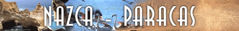
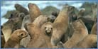

Turismo en Paracas

Ubicada en pleno desierto costero de departamento de Ica, sobre una superficie de 335.000 hectareas, Paracas es la unica reserva nacional que protege el mar frio que baña la corriente de Humbolt
 Esta singular zona cuenta con uno de los mares mas ricos del mundo, condicion favorecida por la ocurrencia de afloramientos marinos que elevan hacia la superficie grandes masas de plancton, alimento vital de
inmunerable especies de peces. Paracas es la tierra de las aves guaneras y las grandes colonias de lobos marinos, el lugar de visita anual de visitas de decenas de aves migratorias, y el ultimo refugio para una serie de especies
endermicas y en peligro de extincion, como el gato marino o chingungo, el pinguino de Humboldt y las parihuanas o flamencos.
Paracas fue tambien el cuna de la cultura Paracas, importante civilizacion precolombina, cuyo legado en forma de espectaculares mantos textiles y ceramios nos asombra hasta el dia de hoy.
Entre las principales atracciones turisticas tenemos: